These are the quintessential sans-serifs.
Grotesques are the very first kind to have appeared, since the late 19th century.
One early example is Akzidenz-Grotesk from 1898,
basically the mother of all sans serifs and i'd take it over Helvetica any day.
In the 1950's, the neo-grotesques appeared, with more neutral and refined (some
could say. boring) shapes. The biggest example is Helvetica
from 1957. Horizontal terminals, tall x-height, all that stuff.
Helvetica clones/similar fonts (12)
So let's begin with some helvetica clones! Or at least ones that i feel fill its place well. But of course they can't be the exact same shapes as helvetica so they aren't an exact 1 to 1 match.
Almarai (OFL)
by Boutros
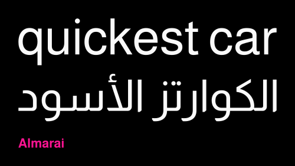Alte Haas Grotesk (Freeware)
by Yann Le Coroller
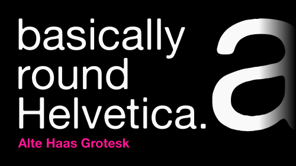BD Lifeless Grotesk (CC BY-SA 4.0)
by Harry Dinh
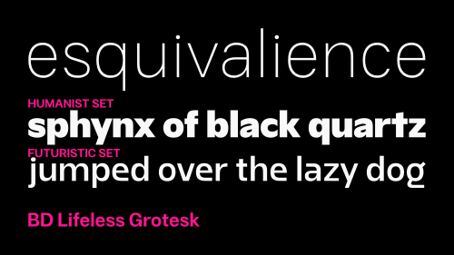BDO Grotesk (OFL)
by Deni Anggara of Lokal Container
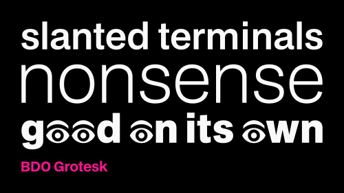Creato Display (OFL)
by Lafontype aka Anugrah Pasau
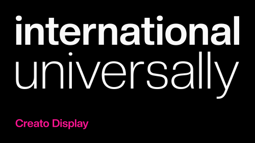FreeSans (GPL)
by Primož Peterlin and Steve White
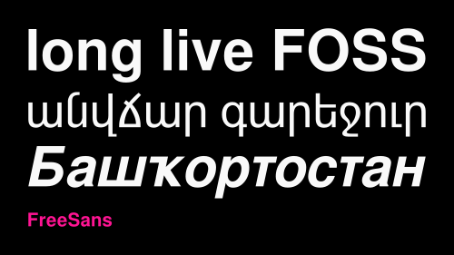Geist (OFL)
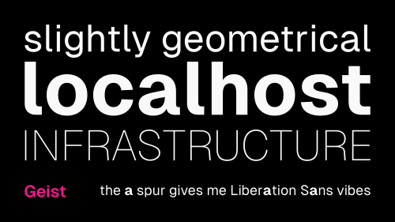Instrument Sans (OFL)
by... Instrument
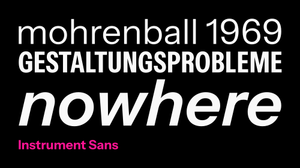Inter (OFL)
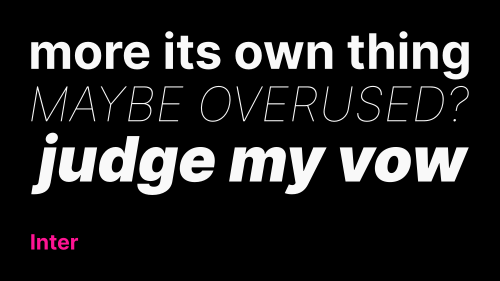Miedinger* (OFL)
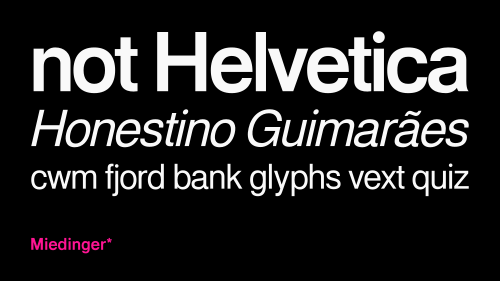Nimbus Sans L (GPL)
by URW++
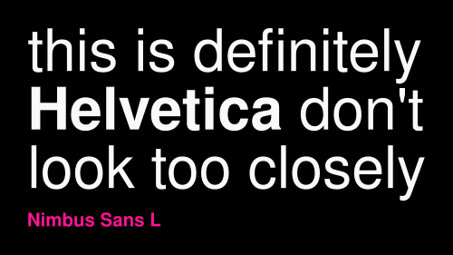Overused Grotesk (OFL)
by RandomMaerks
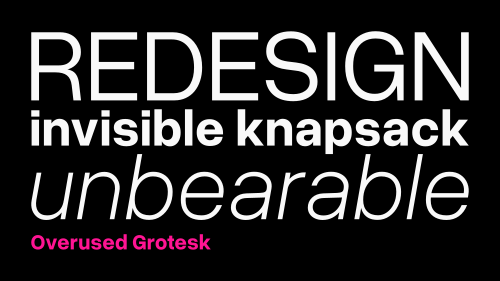